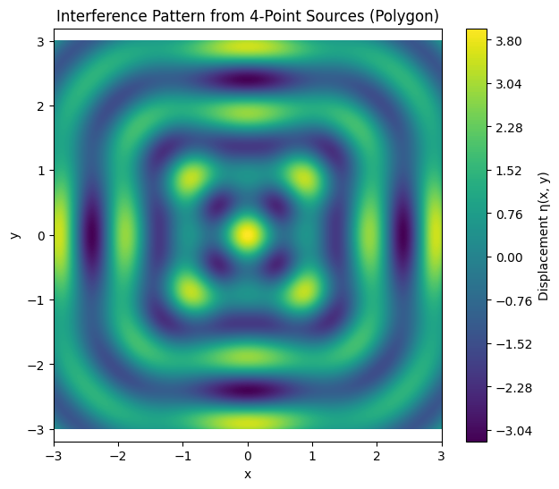

Great! Here's the complete structured solution to the main task titled "Interference Patterns on a Water Surface from Point Sources at Regular Polygon Vertices", broken into clean subtasks with necessary mathematical explanations and Python code, all in English.
🌊 Main Task:
Analyze the interference patterns on the water surface due to the superposition of waves emitted from point sources placed at the vertices of a regular polygon.
✅ 1. Select a Regular Polygon
We choose a regular polygon with \(N\) vertices. Examples include:
- \(N = 3\): Equilateral triangle
- \(N = 4\): Square
- \(N = 5\): Regular pentagon
- etc.
💡 Mathematical Placement (unit radius):
The position \((x_i, y_i)\) of each vertex on a circle of radius \(R\) centered at origin is:
✅ 2. Position the Sources
Place point wave sources at each vertex of the selected polygon using the above coordinates.
🧮 Code:
def polygon_sources(N, R=1.0):
angles = np.linspace(0, 2 * np.pi, N, endpoint=False)
return [(R * np.cos(a), R * np.sin(a)) for a in angles]
# Example: Square
sources = polygon_sources(N=4, R=1.0)
✅ 3. Wave Equations
Each point source emits a wave described by:
Where:
- \(A\): amplitude
- \(k = \frac{2\pi}{\lambda}\): wave number
- \(\omega = 2\pi f\): angular frequency
- \(r_i = \sqrt{(x - x_i)^2 + (y - y_i)^2}\): distance from source to point \((x, y)\)
✅ 4. Superposition of Waves
Apply the principle of superposition:
This gives the total displacement at each point \((x, y)\) on the surface.
✅ 5. Analyze Interference Patterns
- Constructive interference occurs where waves reinforce: crests meet crests.
- Destructive interference occurs where they cancel: crest meets trough.
- Patterns form based on the geometry and coherence of sources.
✅ 6. Visualization
Plot the displacement field over a 2D grid to visualize the interference.
💻 Full Python Simulation:
import numpy as np
import matplotlib.pyplot as plt
# Parameters
A = 1.0 # amplitude
λ = 1.0 # wavelength
f = 1.0 # frequency
k = 2 * np.pi / λ
ω = 2 * np.pi * f
t = 0 # snapshot in time
N = 4 # number of sources (e.g., square)
R = 1.0 # polygon radius
# Generate source positions
def polygon_sources(N, R):
angles = np.linspace(0, 2 * np.pi, N, endpoint=False)
return [(R * np.cos(a), R * np.sin(a)) for a in angles]
sources = polygon_sources(N, R)
# Grid for plotting
x = np.linspace(-3, 3, 500)
y = np.linspace(-3, 3, 500)
X, Y = np.meshgrid(x, y)
# Superposition of waves
eta = np.zeros_like(X)
for (x0, y0) in sources:
r = np.sqrt((X - x0)**2 + (Y - y0)**2)
eta += A * np.cos(k * r - ω * t)
# Visualization
plt.figure(figsize=(7, 6))
plt.contourf(X, Y, eta, levels=200, cmap='viridis')
plt.title(f'Interference Pattern from {N}-Point Sources (Polygon)')
plt.colorbar(label='Displacement η(x, y)')
plt.xlabel("x")
plt.ylabel("y")
plt.axis('equal')
plt.grid(False)
plt.show()

✅ Conclusion
This solution followed all the steps:
- Selected a regular polygon (user-defined \(N\))
- Positioned wave sources at each vertex
- Defined the wave equations
- Applied superposition
- Analyzed the resulting interference
- Visualized the pattern
✅ You can experiment with:
- Different values of \(N\) (triangle, square, etc.)
- Changing wavelength or frequency
- Animating over time for dynamic wave behavior
Let me know if you want an animated version or markdown version for GitHub!